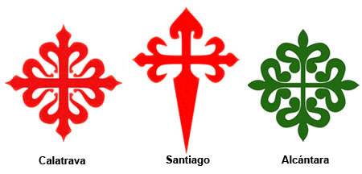

órdenes militares

Las tres órdenes militares en España se convirtieron en poderosas organizaciones militares con abundantes tierras y posesiones. Los dirigentes de estos grupos a menudo llegaron a tener gran influencia política, y en los siglos XIV y XV los magnates más importantes competían por controlar las órdenes con sus ejércitos y propiedades. En siglos posteriores, tras la pérdida de importancia de las órdenes como milicias independientes del Estado y con la organización de ejércitos modernos, estos emblemas sin embargo mantuvieron un gran valor simbólico en la sociedad: había que solicitar permiso especial para llevarlos en la ropa y representaban la pertenencia de sus portadores a la más alta aristocracia (al menos en teoría).